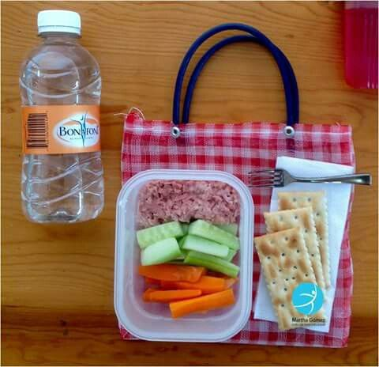

Welcome to
Alimentación saludable | Argentina.gob.ar
2021.06.02 14:34
Presidencia de la Nación
Pasar al contenido principalCampañas Nacionales
Coronavirus COVID-19 conocé información y recomendaciones del Ministerio de Salud.
miArgentina Inicio Ministerio de Salud Alimentación saludableAlimentación saludable
Es la que nos aporta los nutrientes y la energía que necesitamos para mantenernos sanos en todas las etapas de la vida.
Nuestra alimentación en datos
Se consumen solo 2 porciones de frutas y verduras por persona de las 5 recomendadas.
Los niños, niñas y adolescentes toman 40% más de bebidas azucaradas, 2 veces más de snacks y 3 veces más de golosinas respecto de los adultos.
Se consume más del doble de sal recomendada por día.
Elegí comer alimentos frescos
Accedé a los diversos tips sobre alimentación saludable.
Recetas saludables
Accedé a videos y materiales gráficos con recetas saludables.
Sobrepeso y obesidad
Es una epidemia en aumento en todo el mundo. En Argentina, 6 de cada 10 adultos presentan exceso de peso (sobrepeso u obesidad).
Todas las personas tienen derecho a tener una alimentación saludable
Una alimentación saludable es la que aporta todos los nutrientes esenciales y la energía que necesitás para mantenerte sano. Además, previene enfermedades como diabetes, sobrepeso y obesidad, algunos tipos de cáncer e hipertensión, y favorece el desarrollo y crecimiento saludable de los chicos y chicas.
CONOCÉ LA GRÁFICA DE LA ALIMENTACIÓN DIARIA
Tu pausa activa
Sumá 30 minutos de actividad física todos los días. Informate cómo y qué podés hacer .
Recordá siempre lavarte las manos con jabón antes de comer y preparar los alimentos.
Lavá muy bien las frutas y verduras con agua segura antes de consumirlas.
Preferí la alimentación casera es más sana y económica.
La alimentación en las distintas etapas de la vida
Embarazo
Puerperio
Lactancia
Primer año de vida
Entre el año y año y medio
Entre el año y medio y los 2
Entre los 2 y los 3 años
Niños y niñas de 6 a 10 años
Trámites
Turnos Trámites a distancia Atención al ciudadanoAcerca de la República Argentina
Nuestro país Leyes argentinas Organismos Mapa del EstadoAcerca de Argentina.gob.ar
Acerca de este sitio Términos y condiciones Sugerencias Scroll hacia arriba